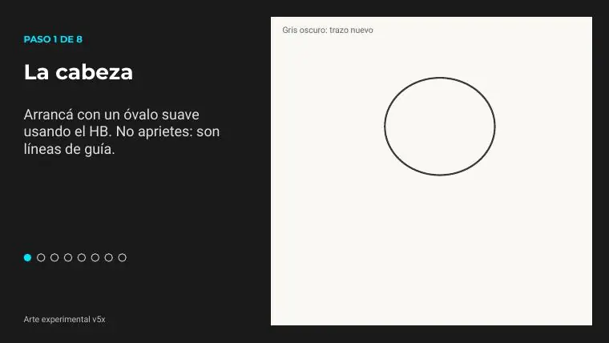
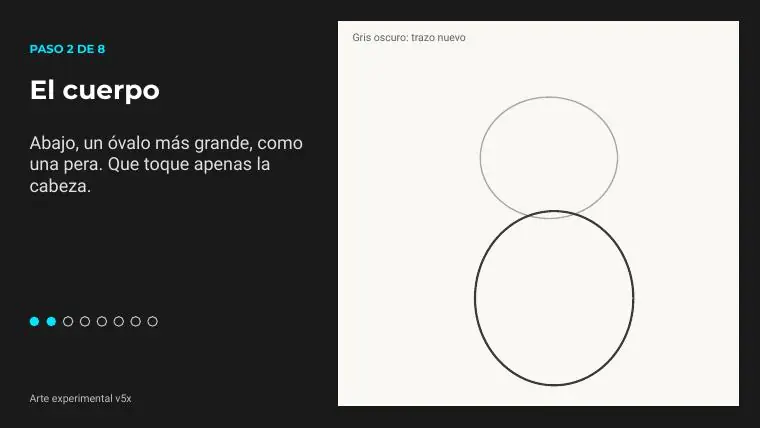
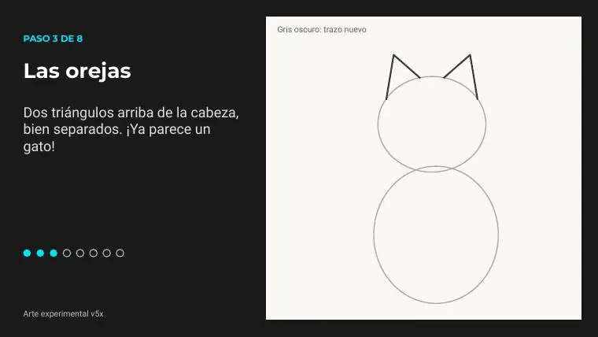
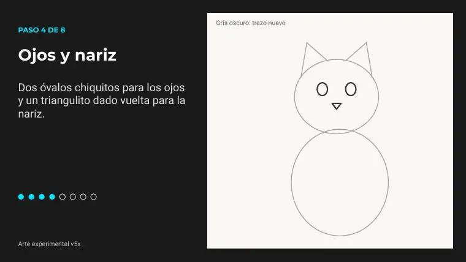
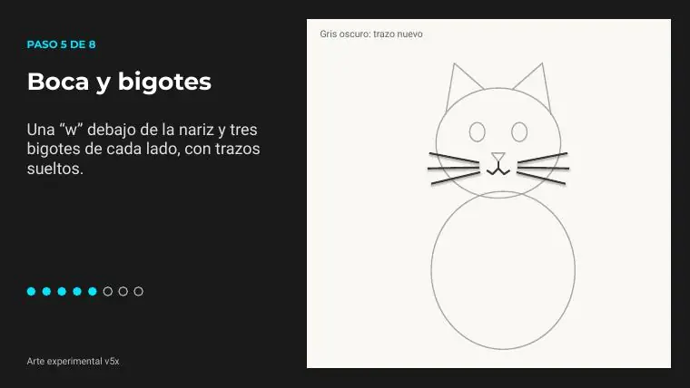
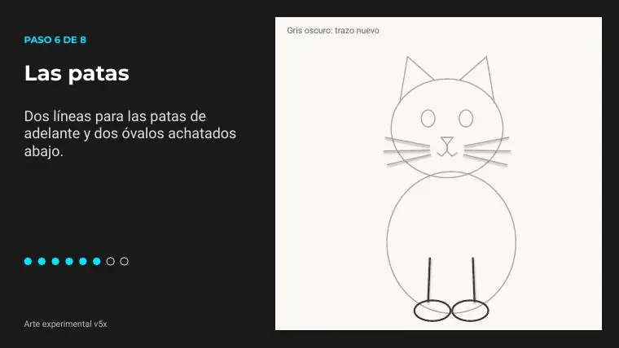
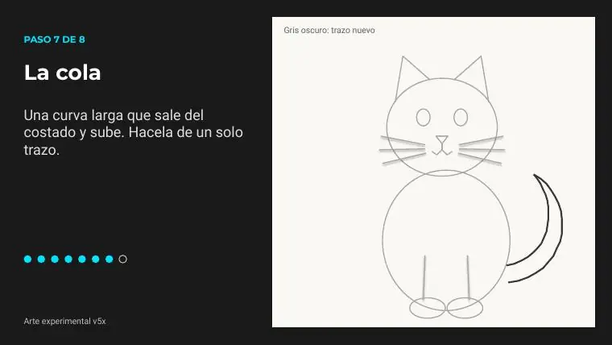
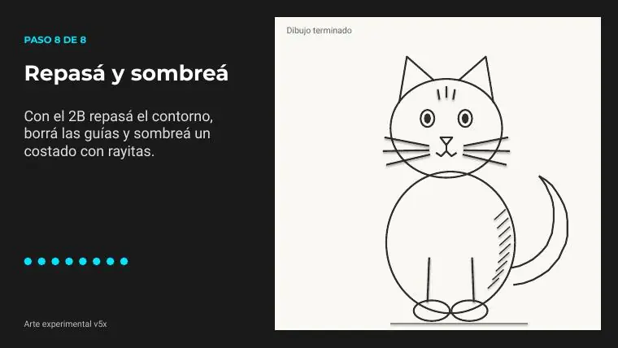

Tutoriales › Cómo dibujar un gato fácil con lápiz

Tutorial 01 · Video publicado
Cómo dibujar un gato fácil con lápiz
Dibujo paso a paso con 8 bloques de pasos explicados abajo. Mirá el video, descargá las diapositivas en PDF (11 páginas) y practicá a tu ritmo.
Video
Materiales
- Materiales Nada raro: lo que tenés en casa. Si no tenés 2B, usá el mismo HB apretando un poco más al final.
- Lápiz HB para bocetar suave
- Goma para borrar las guías
- Lápiz 2B para repasar y sombrear
- Hoja lisa A4 o la que tengas
Paso a paso

Paso 1 de 8 · La cabeza
Arrancá con un óvalo suave usando el HB. No aprietes: son líneas de guía.

Paso 2 de 8 · El cuerpo
Abajo, un óvalo más grande, como una pera. Que toque apenas la cabeza.

Paso 3 de 8 · Las orejas
Dos triángulos arriba de la cabeza, bien separados. ¡Ya parece un gato!

Paso 4 de 8 · Ojos y nariz
Dos óvalos chiquitos para los ojos y un triangulito dado vuelta para la nariz.

Paso 5 de 8 · Boca y bigotes
Una “w” debajo de la nariz y tres bigotes de cada lado, con trazos sueltos.

Paso 6 de 8 · Las patas
Dos líneas para las patas de adelante y dos óvalos achatados abajo.

Paso 7 de 8 · La cola
Una curva larga que sale del costado y sube. Hacela de un solo trazo.

Paso 8 de 8 · Repasá y sombreá
Con el 2B repasá el contorno, borrá las guías y sombreá un costado con rayitas.
Consejos
- Bocetá suave primero: las líneas de guía se borran al final.
- Si algo no sale, pausá el video o volvé a la diapositiva del PDF.
- Practicá el dibujo dos o tres veces: la segunda siempre sale mejor.
Las imágenes de los pasos son páginas del PDF del tutorial (material propio del canal). Licencia: uso personal libre; no reventa.